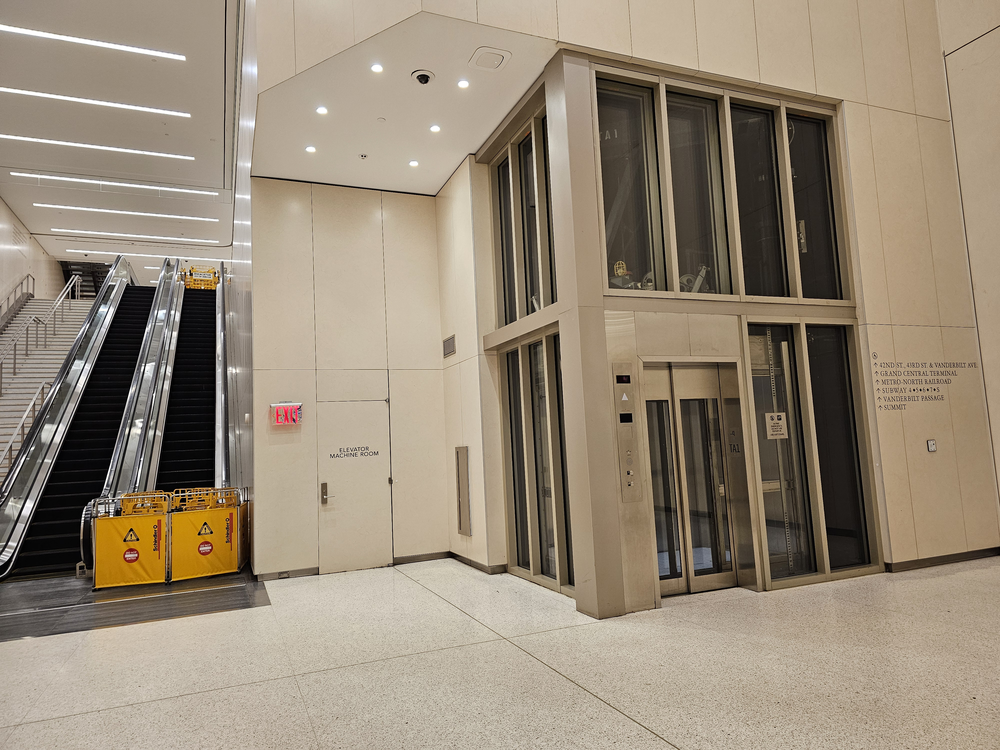
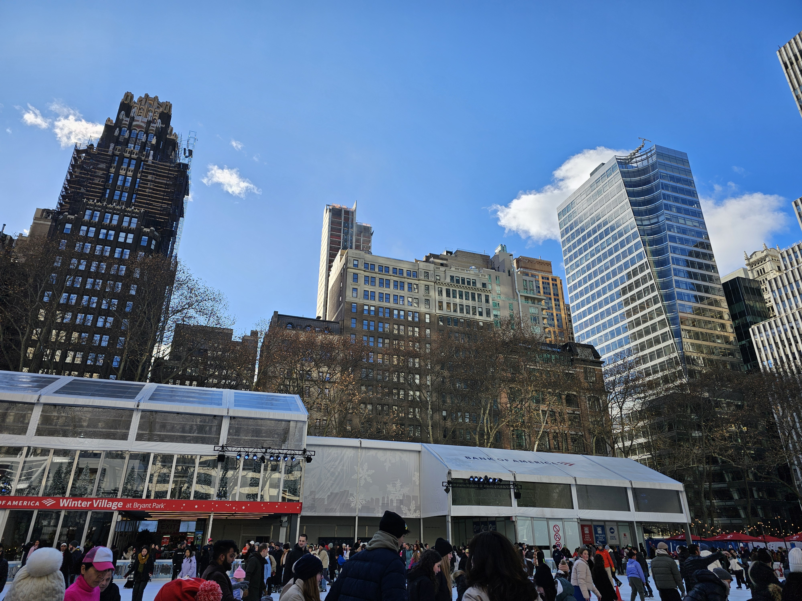

By Walking
Exit from the platform your LIRR train arrives on and head to the mezzanine. Then, take the 45th Street escalators to the concourse.
Once there, turn left and walk straight towards the 43rd Street area, towards the Dining Concourse and Subway.

Go through the clear glass doors towards One Vanderbilt and you will see an elevator.
You could take the stairs 3 floors up to the Street Level.

Or preferably, take the elevator to floor 1, which will lead you directly to the street.
Once on street level, turn right and Walk SOUTH along Vanderbilt Avenue to 42nd Street.
Then cross 42nd Street, and make a RIGHT. Walk WEST along 42nd Street until you reach Bryant Park.
Some Tips and Tricks
At Grand Central, there is a set of elevators that will take you up from the mezzanine to the concourse.
It's located between the 46th Street and 47th Street escalator banks on the mezzanine, so look for signs.
Expected Time Taken - Minutes
To get onto street level from the LIRR tracks, it will take you roughly 6-7 minutes depending on your speed and method you chose.
To get from the street level (near 43rd and Vanderbilt) to Bryant Park, it will take roughly 8 minutes, depending on your speed.
Map Overview
Below is a map showing the route from Grand Central (when you get onto street level) to Bryant Park.
View A Google Maps Route from Grand Central (One Vanderbilt) to Bryant Park
Bryant Park
